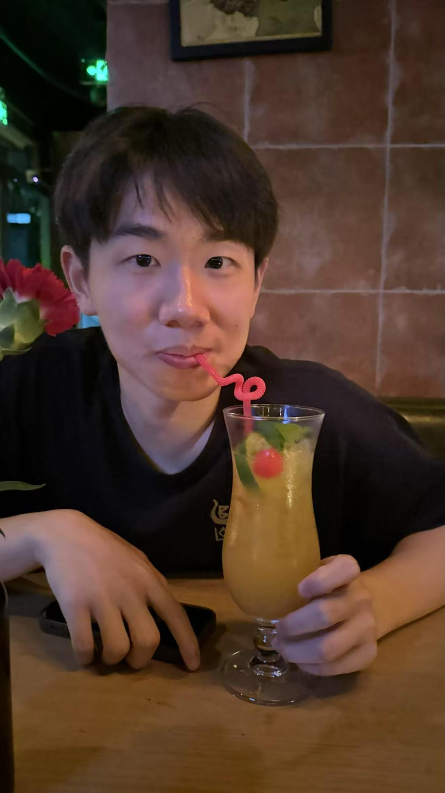
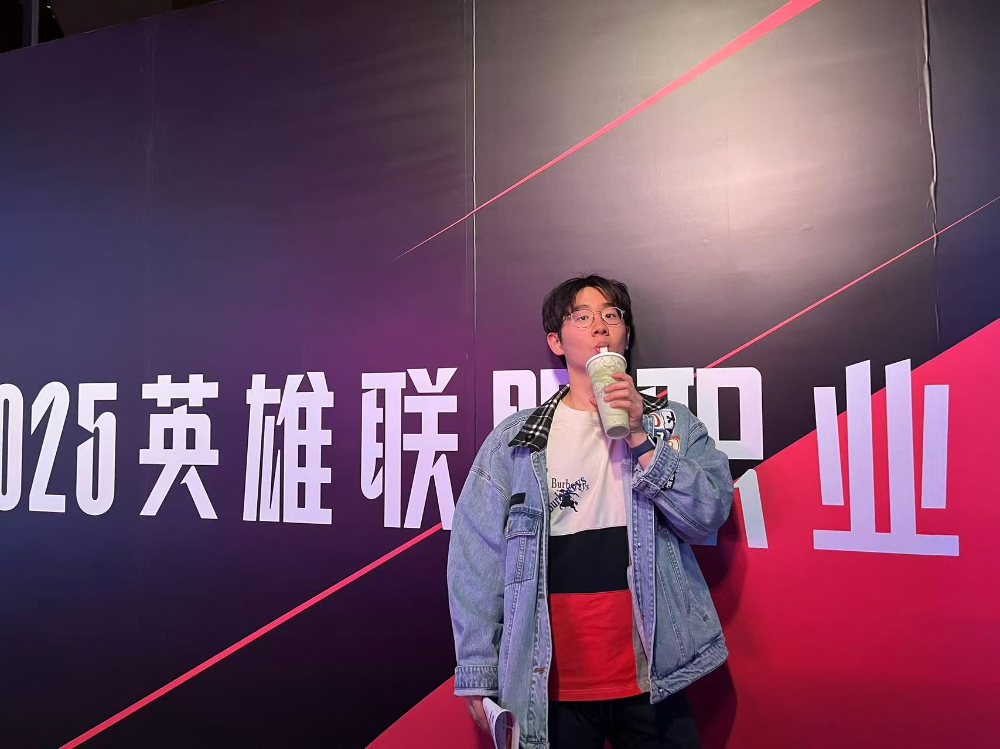

CHI 2025
🏆 Best Paper Award

Incoming CSE PhD Student at the University of Notre Dame.
I design human–AI interfaces that help people understand, steer, and co-adapt with advanced AI models. My work examines how human values shape AI behavior — and how AI behavior, in turn, reshapes human understanding.

I study how humans and AI systems co-adapt over time, and how interaction design can make this process transparent, value-sensitive, and aligned with real human intentions. My research focuses on enabling users to interpret AI reasoning, articulate their goals more effectively, and shape model behavior through rich, iterative interactions.
I am an incoming CSE PhD student at the University of Notre Dame, where I will be advised by Dr. Toby Li. Previously, I earned my Bachelor's degree in Software Engineering from Tongji University. I am eager to combine empirical studies, interface design, and computational analysis to advance bidirectional alignment — ensuring that AI systems collaborate with diverse users in ways that respect their values and context.


My experience in water polo shapes how I think about coordination, situational awareness, and adaptive teamwork — metaphors that often inspire my approach to human–AI collaboration. I also was part of team who won the 4th place in China national college water polo championship.

I enjoyed playing games on computer since I was a child.